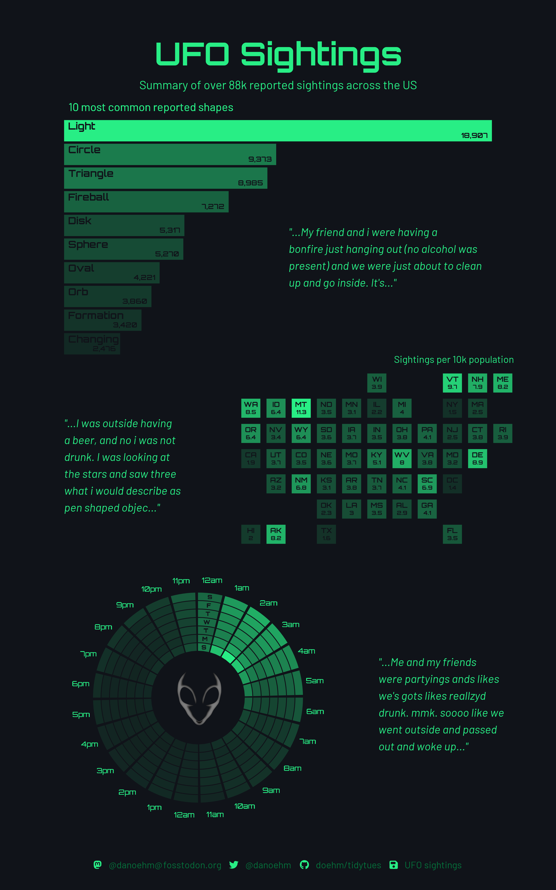
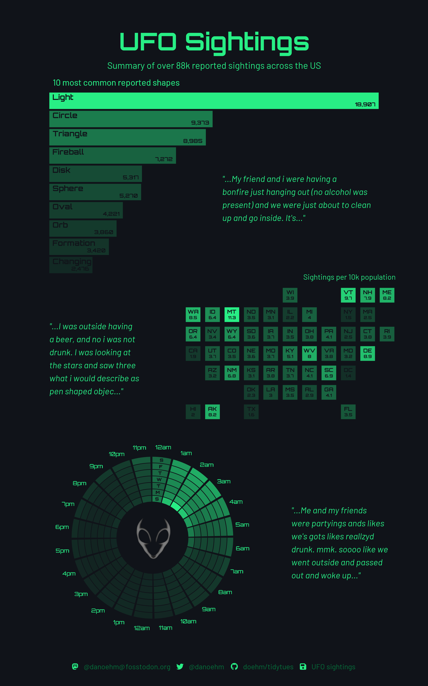
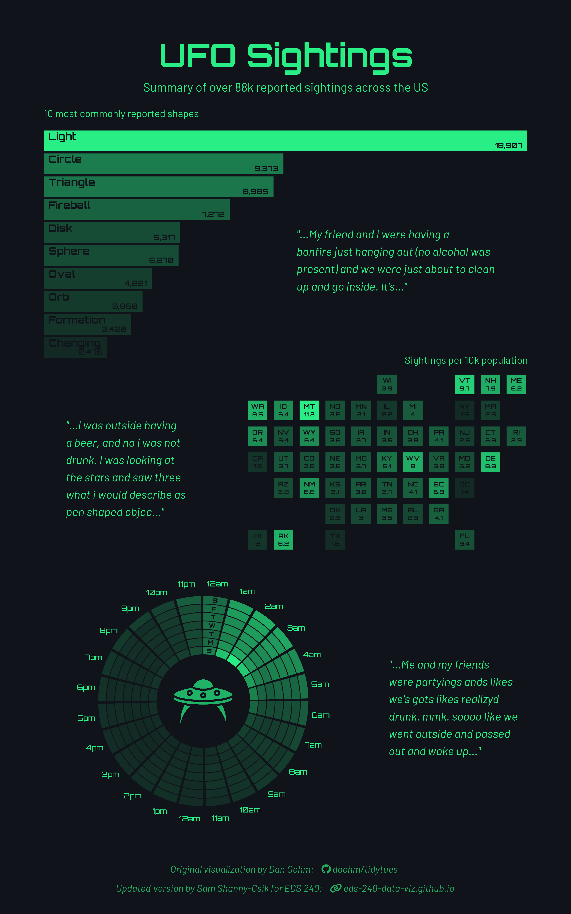

Original viz, by Dan Oehm (original code)

Assigned Mon 01/06/2025 | Due Sat 01/18/2025
Read each part of the assignment carefully, and use the check boxes to ensure you’ve addressed all elements of the assignment!
{ggplot2} codeMuch of your time as a data scientist will be spent looking at code written by others – you may imagine scenarios such as trying to learn from and adapt someone else’s code for your own work, conducting a code review for a colleague, or validating the code output of a generative AI tool. Being able to look at and make sense of code that you did not write yourself is an invaluable skill and an important one to practice throughout your learning journey. Here, you’ll be asked to interpret and annotate {ggplot2} code written by someone else. This will likely require running code (both as a whole and line-by-line), as well as Googling and / or reading documentation.
I recognize that there is (likely) a lot of new code presented here that we haven’t yet covered in this course (we’ll get there eventually though!). This is intentionally an exercise is resourcefulness! By the end of this exercise, you should feel a bit more confident in your ability to interpret (and maybe even reuse!) code written by others.
Annotate code adapted from Dan Oehm’s UFO Sightings visualization (original code & original visualization). You can find metadata and additional information about the data set on the rfordatascience/tidytuesday (2023-06-20) readme.md. Part 1 should be completed via GitHub Classroom (find the assignment link on Slack).
Dan Oehm is the original visionary and creator of this epic TidyTuesday submission from 2023. The code you’ll be annotating for this assignment is a refactored version of Dan’s original code. Refactoring is the process of restructuring (e.g. reorganizing or rewriting) code while preserving its original functionality / output (e.g. the only visual differences in the outputs are the UFO image and plot caption, which were intentionally changed).

Original viz, by Dan Oehm (original code)

Modified viz, by Sam Shanny-Csik (refactored code, see below)
To enlarge image (in Chrome), right-click on image > Open Image in New Tab
Begin by accepting the HW #1 assignment via GitHub Classroom (link will be shared in Slack). The code below is included only for reference.
{colorspace}, {geofacet}, {ggtext}, {glue}, {grid}, {magick}, {patchwork}, {scales}, {showtext}, {tidyverse}?function_name in the console. Vignettes and pkgdown sites are incredible resources as well (e.g. here is a vignette and the pkgdown site for the {patchwork} package)Command / Ctrl + F) to ensure that you’ve replaced all instances of # ANNOTATE with your own annotated descriptionNote: This is sample code. Please refer to the GitHub Classroom link (shared in Slack) for completing the assignment.
##~~~~~~~~~~~~~~~~~~~~~~~~~~~~~~~~~~~~~~~~~~~~~~~~~~~~~~~~~~~~~~~~~~~~~~~~~~~~~~
## --
##--------------------------------- 0. SETUP------------------------------------
## --
##~~~~~~~~~~~~~~~~~~~~~~~~~~~~~~~~~~~~~~~~~~~~~~~~~~~~~~~~~~~~~~~~~~~~~~~~~~~~~~
#..........................load packages.........................
library(colorspace)
library(geofacet)
library(ggtext)
library(glue)
library(grid)
library(magick)
library(patchwork)
library(scales)
library(showtext)
library(tidyverse)
#.............read in data from GitHub (tidytuesday).............
ufo_sightings <- read_csv('https://raw.githubusercontent.com/rfordatascience/tidytuesday/main/data/2023/2023-06-20/ufo_sightings.csv')
places <- read_csv('https://raw.githubusercontent.com/rfordatascience/tidytuesday/main/data/2023/2023-06-20/places.csv')
#.........create color palette and named color variables.........
alien <- c("#101319", "#28ee85")
bg <- alien[1]
accent <- alien[2]
#........................import UFO image........................
ufo_image <- magick::image_read(path = here::here("images", "ufo.png"))
#......................import Google fonts.......................
sysfonts::font_add_google(name = "Orbitron", family = "orb")
sysfonts::font_add_google(name = "Barlow", family = "bar")
#....................import FontAwesome fonts....................
sysfonts::font_add(family = "fa-brands", regular = here::here("fonts", "Font Awesome 6 Brands-Regular-400.otf"))
sysfonts::font_add(family = "fa-solid", regular = here::here("fonts", "Font Awesome 6 Free-Solid-900.otf"))
#........use {showtext} to render text for future devices........
showtext::showtext_auto(enable = TRUE)
##~~~~~~~~~~~~~~~~~~~~~~~~~~~~~~~~~~~~~~~~~~~~~~~~~~~~~~~~~~~~~~~~~~~~~~~~~~~~~~
## --
##----------------------------- I. DATA WRANGLING-------------------------------
## --
##~~~~~~~~~~~~~~~~~~~~~~~~~~~~~~~~~~~~~~~~~~~~~~~~~~~~~~~~~~~~~~~~~~~~~~~~~~~~~~
##~~~~~~~~~~~~~~~~~~~~~~~~~~~~~~~~~~~~~~~~~~~~~~~~~~~~~~~~~~~~~~~~~~~~~~~~~~~~~~
## i. create df of population size by US state ----
##~~~~~~~~~~~~~~~~~~~~~~~~~~~~~~~~~~~~~~~~~~~~~~~~~~~~~~~~~~~~~~~~~~~~~~~~~~~~~~
df_pop <- places |>
# filter the `country_code` column for just US observations ----
filter(country_code == "US") |>
# update incorrect state code, "Fl", to "FL" ----
mutate(state = str_replace(string = state,
pattern = "Fl",
replacement = "FL")) |>
# calculate the total population size by state and add as a column called `pop` ----
group_by(state) |>
summarise(pop = sum(population)) |>
ungroup()
##~~~~~~~~~~~~~~~~~~~~~~~~~~~~~~~~~~~~~~~~~~~~~~~~~~~~~~~~~~~~~~~~~~~~~~~~~~~~~~
## ii. create df of sightings and population by state ----
##~~~~~~~~~~~~~~~~~~~~~~~~~~~~~~~~~~~~~~~~~~~~~~~~~~~~~~~~~~~~~~~~~~~~~~~~~~~~~~
df_us <- ufo_sightings |>
# ANNOTATE ----
filter(country_code == "US") |>
# update incorrect state code, "Fl", to "FL" ----
mutate(state = str_replace(string = state,
pattern = "Fl",
replacement = "FL")) |>
# ANNOTATE ----
count(state) |>
# ANNOTATE ----
left_join(df_pop, by = "state") |>
# rename column `n` (for clarity) ----
rename(num_obs = n) |>
# add new columns ----
mutate(
# ANNOTATE ----
num_obs_per10k = num_obs / pop * 10000,
# ANNOTATE (be sure to describe what the calculated values in this new column represent) ----
opacity_val = num_obs_per10k / max(num_obs_per10k)
)
##~~~~~~~~~~~~~~~~~~~~~~~~~~~~~~~~~~~~~~~~~~~~~~~~~~~~~~~~~~~~~~~~~~~~~~~~~~~~~~
## iii. create df of most commonly sighted UFO shapes ----
##~~~~~~~~~~~~~~~~~~~~~~~~~~~~~~~~~~~~~~~~~~~~~~~~~~~~~~~~~~~~~~~~~~~~~~~~~~~~~~
df_shape <- ufo_sightings |>
# ANNOTATE ----
filter(!shape %in% c("unknown", "other")) |>
# ANNOTATE ----
count(shape) |>
# rename column `n` (for clarity) ----
rename(total_sightings = n) |>
# ANNOTATE ----
arrange(desc(total_sightings)) |>
# ANNOTATE ----
slice_head(n = 10) |>
# add new columns ----
mutate(
# ANNOTATE ----
shape = fct_reorder(.f = shape,
.x = total_sightings),
# ANNOTATE (be sure to describe what the calculated values in this new column represent) ----
opacity_val = scales::rescale(x = total_sightings,
to = c(0.3, 1))
)
##~~~~~~~~~~~~~~~~~~~~~~~~~~~~~~~~~~~~~~~~~~~~~~~~~~~~~~~~~~~~~~~~~~~~~~~~~~~~~~
## iv. create df of sightings by day / time ----
##~~~~~~~~~~~~~~~~~~~~~~~~~~~~~~~~~~~~~~~~~~~~~~~~~~~~~~~~~~~~~~~~~~~~~~~~~~~~~~
df_day_hour <- ufo_sightings |>
# create three new cols with day number, hour, and day abbreviation, extracted from the `reported_date_time` column ----
mutate(
day = wday(reported_date_time),
hour = hour(reported_date_time),
wday = wday(reported_date_time, label = TRUE)
) |>
# ANNOTATE ----
count(day, wday, hour) |>
# rename column `n` (for clarity) ----
rename(total_daily_obs = n) |>
# add new columns ----
mutate(
# ANNOTATE (be sure to describe what the calculated values in this new column represent) ----
opacity_val = total_daily_obs / max(total_daily_obs),
# ANNOTATE ----
hour_lab = case_when(
hour == 0 ~ "12am",
hour <= 12 ~ paste0(hour, "am"),
hour == 12 ~ "12pm",
TRUE ~ paste0(hour - 12, "pm"))
)
##~~~~~~~~~~~~~~~~~~~~~~~~~~~~~~~~~~~~~~~~~~~~~~~~~~~~~~~~~~~~~~~~~~~~~~~~~~~~~~
## --
##------------------------ III. PREPARE TEXT ELEMENTS---------------------------
## --
##~~~~~~~~~~~~~~~~~~~~~~~~~~~~~~~~~~~~~~~~~~~~~~~~~~~~~~~~~~~~~~~~~~~~~~~~~~~~~~
#........extract & format quotes from `ufo_sightings` df.........
quotes <- paste0('"...', str_to_sentence(ufo_sightings$summary[c(47816, 6795, 93833)]), '..."')
#....create caption (which includes fontawesome icons & text)....
original <- glue("Original visualization by Dan Oehm:")
dan_github <- glue("<span style='font-family:fa-brands;'></span> doehm/tidytues")
new <- glue("Updated version by Sam Shanny-Csik for EDS 240:")
link <- glue("<span style='font-family:fa-solid;'></span> eds-240-data-viz.github.io")
space <- glue("<span style='color:{bg};'>. .</span>")
caption <- glue("{original}{space}{dan_github}
<br><br>
{new}{space}{link}")
##~~~~~~~~~~~~~~~~~~~~~~~~~~~~~~~~~~~~~~~~~~~~~~~~~~~~~~~~~~~~~~~~~~~~~~~~~~~~~~
## --
##----------------------------- IV. BUILD PLOTS---------------------------------
## --
##~~~~~~~~~~~~~~~~~~~~~~~~~~~~~~~~~~~~~~~~~~~~~~~~~~~~~~~~~~~~~~~~~~~~~~~~~~~~~~
##~~~~~~~~~~~~~~~~~~~~~~~~~~~~~~~~~~~~~~~~~~~~~~~~~~~~~~~~~~~~~~~~~~~~~~~~~~~~~~
## i. create bar plot of commonly reported UFO shapes ----
##~~~~~~~~~~~~~~~~~~~~~~~~~~~~~~~~~~~~~~~~~~~~~~~~~~~~~~~~~~~~~~~~~~~~~~~~~~~~~~
plot_shape <- ggplot(data = df_shape) +
# ANNOTATE (be sure to comment on the type of geom & describe aesthetic mappings) ----
geom_col(aes(x = total_sightings, y = shape, alpha = opacity_val),
fill = accent) +
# add shape labels (in Title case) to the top left corner of bars ----
geom_text(aes(x = 200, y = shape, label = str_to_title(shape)),
family = "orb",
fontface = "bold",
color = bg,
size = 14,
hjust = 0,
nudge_y = 0.2) +
# ANNOTATE (be sure to describe aesthetics mappings, similar to the geom_text() layer, directly above) ----
geom_text(aes(x = total_sightings-200, y = shape, label = scales::comma(total_sightings)),
family = "orb",
fontface = "bold",
color = bg,
size = 10,
hjust = 1,
nudge_y = -0.2) +
# ANNOTATE ----
scale_x_continuous(expand = c(0, NA)) +
# ANNOTATE ----
labs(subtitle = "10 most commonly reported shapes") +
# apply a completely empty theme ----
theme_void() +
# further customize theme ----
theme(
# ANNOTATE ---
plot.subtitle = element_text(family = "bar",
size = 40,
color = accent,
hjust = 0,
margin = margin(b = 10)),
# ANNOTATE ----
legend.position = "none"
)
##~~~~~~~~~~~~~~~~~~~~~~~~~~~~~~~~~~~~~~~~~~~~~~~~~~~~~~~~~~~~~~~~~~~~~~~~~~~~~~
## ii. create US map with sightings by state ----
##~~~~~~~~~~~~~~~~~~~~~~~~~~~~~~~~~~~~~~~~~~~~~~~~~~~~~~~~~~~~~~~~~~~~~~~~~~~~~~
# HINT: Consider temporarily commenting out / rearranging the `geom_*()` layers to better understand how this plot is constructed
plot_us <- ggplot(df_us) +
# ANNOTATE ----
geom_rect(aes(xmin = 0, xmax = 1, ymin = 0, ymax = 1, alpha = opacity_val),
fill = accent) +
# ANNOTATE ----
geom_text(aes(x = 0.5, y = 0.7, label = state),
family = "orb",
fontface = "bold",
size = 9,
color = bg) +
# ANNOTATE ----
geom_text(aes(x = 0.5, y = 0.3, label = round(num_obs_per10k, 1)),
family = "orb",
fontface = "bold",
size = 8,
color = bg) +
# ANNOTATE ----
geofacet::facet_geo(~state) +
# ANNOTATE ----
coord_fixed(ratio = 1) +
# ANNOTATE ----
labs(subtitle = "Sightings per 10k population") +
# apply a completely empty theme ----
theme_void() +
# further customize theme ----
theme(
# ANNOTATE ----
strip.text = element_blank(),
# ANNOTATE ----
plot.subtitle = element_text(family = "bar",
size = 40,
color = accent,
hjust = 1,
margin = margin(b = 10)),
# ANNOTATE ----
legend.position = "none"
)
##~~~~~~~~~~~~~~~~~~~~~~~~~~~~~~~~~~~~~~~~~~~~~~~~~~~~~~~~~~~~~~~~~~~~~~~~~~~~~~
## iii. create tile plot of sightings by day / time ----
##~~~~~~~~~~~~~~~~~~~~~~~~~~~~~~~~~~~~~~~~~~~~~~~~~~~~~~~~~~~~~~~~~~~~~~~~~~~~~~
plot_day <- ggplot(data = df_day_hour) +
# ANNOTATE (be sure to comment on the type of geom & describe aesthetic mappings) ----
geom_tile(aes(x = hour, y = day, alpha = opacity_val),
fill = accent,
height = 0.9,
width = 0.9) +
# ANNOTATE (be sure to describe aesthetics mappings) ----
geom_text(aes(x = hour, y = 9, label = hour_lab),
family = "orb",
color = accent,
size = 10) +
# ANNOTATE (be sure to describe aesthetics mappings) ----
geom_text(aes(x = 0, y = day, label = str_sub(string = wday, start = 1, end = 1)),
family = "orb",
fontface = "bold",
color = bg,
size = 8) +
# ANNOTATE (also comment on ~why~ we're doing this) ----
ylim(-5, 9) +
xlim(NA, 23.55) +
# ANNOTATE ----
coord_polar() +
# apply a completely empty theme ----
theme_void() +
# further customize theme ----
theme(
# ANNOTATE ----
plot.background = element_rect(fill = bg, color = bg),
# ANNOTATE ----
legend.position = "none"
)
##~~~~~~~~~~~~~~~~~~~~~~~~~~~~~~~~~~~~~~~~~~~~~~~~~~~~~~~~~~~~~~~~~~~~~~~~~~~~~~
## iv. create quotes as individual plot objects ----
##~~~~~~~~~~~~~~~~~~~~~~~~~~~~~~~~~~~~~~~~~~~~~~~~~~~~~~~~~~~~~~~~~~~~~~~~~~~~~~
# A comment from Dan Oehm's original code: "A bit clunky but the path of least resistance."
# NOTE: You only need to annotate `quote1` (`quote2` & `quote3` are constructed nearly identically).
#............................quote 1.............................
quote1 <- ggplot() +
# ANNOTATE ----
annotate(geom ="text",
x = 0,
y = 1,
label = str_wrap(string = quotes[1], width = 40),
family = "bar",
fontface = "italic",
color = accent,
size = 16,
hjust = 0,
lineheight = 0.4) +
# ANNOTATE ----
xlim(0, 1) +
ylim(0, 1) +
# apply a completely empty theme ----
theme_void() +
# ANNOTATE (be sure to describe why we must set `clip = "off"`) ----
coord_cartesian(clip = "off")
#............................quote 2.............................
quote2 <- ggplot() +
annotate(geom = "text",
x = 0,
y = 1,
label = str_wrap(string = quotes[2], width = 25),
family = "bar",
fontface = "italic",
color = accent,
size = 16,
hjust = 0,
lineheight = 0.4) +
xlim(0, 1) +
ylim(0, 1) +
theme_void() +
coord_cartesian(clip = "off")
#............................quote 3.............................
quote3 <- ggplot() +
annotate(geom = "text",
x = 0,
y = 1,
label = str_wrap(string = quotes[3], width = 25),
family = "bar",
fontface = "italic",
color = accent,
size = 16,
hjust = 0,
lineheight = 0.4) +
xlim(0, 1) +
ylim(0, 1) +
theme_void() +
coord_cartesian(clip = "off")
##~~~~~~~~~~~~~~~~~~~~~~~~~~~~~~~~~~~~~~~~~~~~~~~~~~~~~~~~~~~~~~~~~~~~~~~~~~~~~~
## v. turn UFO image into a ggplot object ----
##~~~~~~~~~~~~~~~~~~~~~~~~~~~~~~~~~~~~~~~~~~~~~~~~~~~~~~~~~~~~~~~~~~~~~~~~~~~~~~
# NOTE: Grob stands for graphical object. Each visual element rendered in a a ggplot (e.g. lines, points, axes, entire panels, even images) is represented as a grob. Grobs can be manipulated individually to fully customize plots.
plot_ufo <- ggplot() +
# convert magick image to a grob and add as an annotation ----
annotation_custom(grid::rasterGrob(ufo_image)) +
# apply a completely empty theme ----
theme_void() +
# further customize theme ----
theme(
# ANNOTATE ----
plot.background = element_rect(fill = bg, color = bg)
)
##~~~~~~~~~~~~~~~~~~~~~~~~~~~~~~~~~~~~~~~~~~~~~~~~~~~~~~~~~~~~~~~~~~~~~~~~~~~~~~
## vi. create infographic base plot ----
##~~~~~~~~~~~~~~~~~~~~~~~~~~~~~~~~~~~~~~~~~~~~~~~~~~~~~~~~~~~~~~~~~~~~~~~~~~~~~~
plot_base <- ggplot() +
# ANNOTATE ----
labs(
title = "UFO Sightings",
subtitle = "Summary of over 88k reported sightings across the US",
caption = caption
) +
# apply a completely empty theme ----
theme_void() +
# further customize theme ----
theme(
# ANNOTATE ----
text = element_text(family = "orb",
size = 48,
lineheight = 0.3,
color = accent),
# ANNOTATE ----
plot.background = element_rect(fill = bg,
color = bg),
# ANNOTATE ----
plot.title = element_text(size = 128,
face = "bold",
hjust = 0.5,
margin = margin(b = 10)),
# ANNOTATE ----
plot.subtitle = element_text(family = "bar",
hjust = 0.5,
margin = margin(b = 20)),
# ANNOTATE ----
plot.caption = ggtext::element_markdown(family = "bar",
face = "italic",
color = colorspace::darken(accent, 0.25),
hjust = 0.5,
margin = margin(t = 20)),
# ANNOTATE ----
plot.margin = margin(b = 20, t = 50, r = 50, l = 50)
)
##~~~~~~~~~~~~~~~~~~~~~~~~~~~~~~~~~~~~~~~~~~~~~~~~~~~~~~~~~~~~~~~~~~~~~~~~~~~~~~
## --
##-------------------- V. STITCH IT ALL TOGETHER AND SAVE-----------------------
## --
##~~~~~~~~~~~~~~~~~~~~~~~~~~~~~~~~~~~~~~~~~~~~~~~~~~~~~~~~~~~~~~~~~~~~~~~~~~~~~~
#.....................stitch it all together.....................
plot_final <- plot_base +
# ANNOTATE ----
inset_element(plot_shape, left = 0, right = 1, top = 1, bottom = 0.66) +
inset_element(plot_us, left = 0.42, right = 1, top = 0.74, bottom = 0.33) +
inset_element(plot_day, left = 0, right = 0.66, top = 0.4, bottom = 0) +
inset_element(quote1, left = 0.5, right = 1, top = 0.8, bottom = 0.72) +
inset_element(quote2, left = 0, right = 1, top = 0.52, bottom = 0.4) +
inset_element(quote3, left = 0.7, right = 1, top = 0.2, bottom = 0) +
inset_element(plot_ufo, left = 0.25, right = 0.41, top = 0.23, bottom = 0.17) +
# ANNOTATE (it's helpful to comment this out, then save the plot using ggsave() to understand why this part is necessary) ----
plot_annotation(
theme = theme(
plot.background = element_rect(fill = bg,
color = bg)
)
)
#.......................save as a png file.......................
ggsave(plot = plot_final,
filename = here::here("outputs", "ufo_sightings_infographic.png"),
height = 16,
width = 10)Once you’re done annotating, respond to the following three questions about this data visualization:
You must complete the following, as detailed below, to receive a “Satisfactory” mark for Assignment #1, Part I:
eds240-hw1-username/Part1.qmd).
Everyone receives one “free pass” for not submitting assignments via specified channels, after which you will receive a “Not Yet” mark.
End Part I
Note: This part of HW #1 is the first step in working towards your final course assignment, HW #4 (we’ll be breaking it down a bit, week-by-week). This week, we’ll mostly be focused on some prep work. Your final assignment is meant to combine nearly all of the course learning outcomes(!):
{ggplot2} + ggplot2 extension packagesBegin by reading HW #4 in full so that you have a clear understanding of the options, goals, and requirements for your final class assignment.
Now that you have a better understanding of where we’re headed, let’s make a bit of progress towards that end goal. This week, you’ll focus on finding data that interest you and begin brainstorming some questions that you might explore / answer using those data. Your data set(s) may be related to a past project, or even your current Capstone or GP. It may also be a completely new data set(s), unrelated to anything you’re currently working on. Explore the Data sources section of the course website’s resources page if you need some inspiration on where to start (you are not limited to just these data sources):
I highly recommend checking out the following resources before diving in:
Once you’ve found your data set(s), answer the following questions:
You must complete the following, as detailed below, to receive a “Satisfactory” mark for Assignment #1, Part II:
Complete the following step under your own personal GitHub profile, not via GitHub Classroom. See details below.
End Part II